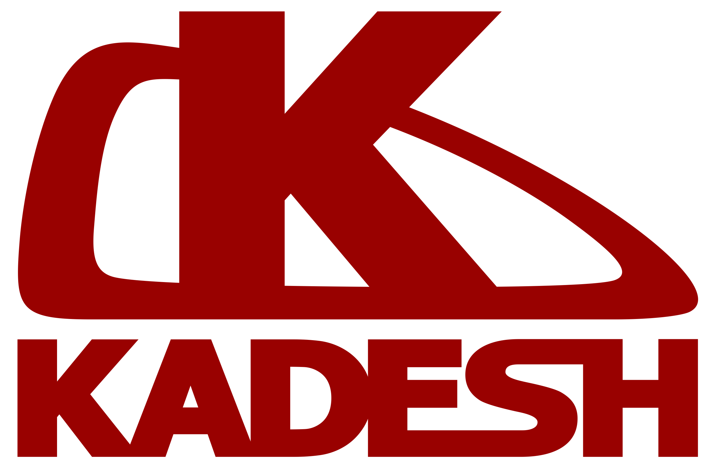
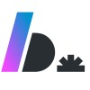

André Vitor F. Adams
Desenvolvedor Back-end | Sistemas Distribuídos

Ponta Grossa, Paraná, Brasil
andrevitor103@gmail.com
(42) 99871-8769
Desenvolvedor Back-end | Sistemas Distribuídos
Ponta Grossa, Paraná, Brasil
andrevitor103@gmail.com
(42) 99871-8769
Desenvolvedor de software com foco em Back-end, atuando no desenvolvimento e na evolução de aplicações com foco em microsserviços. Experiência com sistemas distribuídos, processamento assíncrono, mensageria e arquitetura orientada a eventos, com atenção à confiabilidade, ao desempenho, consistência de dados e observabilidade.
Atuando principalmente com PHP, Kotlin e utilizando tecnologias como Apache Kafka, Docker e AWS, além de ferramentas de monitoramento e análise de logs. Conhecimentos em Domain-Driven Design (DDD), Arquitetura Hexagonal, Design Patterns e CQRS.
Competências técnicas
Back-end: PHP, Kotlin, Node.js, JavaScript, TypeScript
Arquitetura e engenharia de software: Microsserviços, Sistemas Distribuídos, Arquitetura Orientada a Eventos, DDD, Arquitetura Hexagonal, Design Patterns, CQRS
Mensageria e processamento: Apache Kafka, processamento assíncrono, idempotência
Cloud e infraestrutura: AWS, ECS, S3, API Gateway, CloudWatch, DocumentDB, RDS, Docker
Observabilidade: Prometheus, Grafana, Splunk, New Relic
Engenheiro de Software Pleno
Abril de 2025 – atual
Desenvolvimento e evolução de sistemas back-end no contexto de pagamentos, com foco em microsserviços.
Desenvolvimento e manutenção de microsserviços e integrações entre sistemas.
Implementação e evolução de fluxos assíncronos utilizando Apache Kafka e arquitetura orientada a eventos.
Aplicação de práticas para confiabilidade e consistência no processamento de eventos, incluindo idempotência e padrões de integração entre banco de dados e mensageria.
Monitoramento e investigação de problemas em produção utilizando ferramentas de observabilidade, métricas e logs.
Aplicação de princípios de design e arquitetura para apoiar a organização, a manutenibilidade e a evolução dos serviços.
Tecnologias: PHP, Kotlin, Apache Kafka, Docker, AWS, Prometheus, Grafana, Splunk, New Relic
Engenheiro de Software Júnior
Abril de 2022 – maio de 2025
Atuação no workspace de Payout, responsável pela intermediação de pagamentos de empresas estrangeiras para brasileiros.
Engenheiro de Software Trainee
Janeiro de 2022 – abril de 2022

Desenvolvedor Web
Agosto de 2019 – julho de 2021
Desenvolvimento de aplicações web utilizando principalmente PHP, JavaScript e MySQL.
Consultoria em análises de dados e suporte aos diferentes setores da empresa.
Tecnologias: PHP, JavaScript, MySQL
Auxiliar Administrativo e Financeiro
Abril de 2017 – agosto de 2019
Execução de controles administrativos, contas a pagar, apoio à contabilidade e controle de notas fiscais.
Pós-graduação em Arquitetura de Software, Ciência de Dados e Cybersecurity
Maio de 2025 – maio de 2026
Tecnólogo em Análise e Desenvolvimento de Sistemas
Fevereiro de 2019 – julho de 2022
